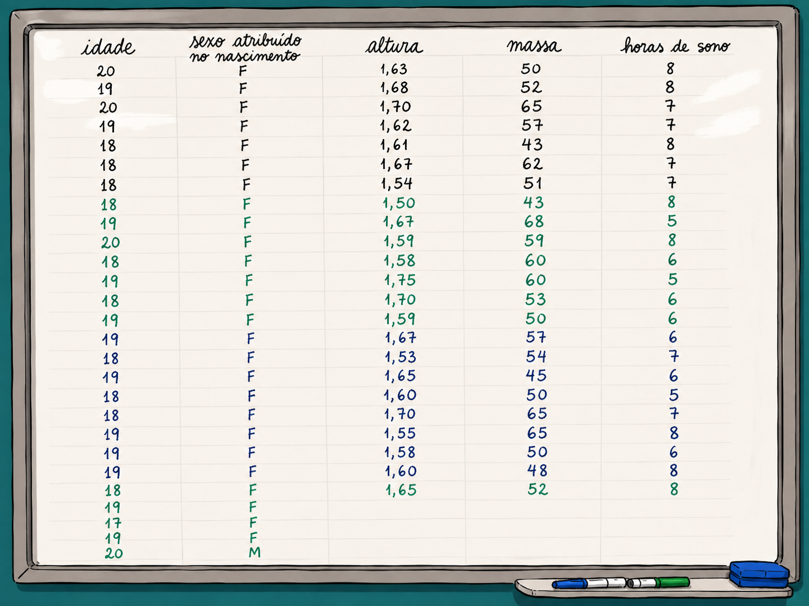

Caderno de Exercícios Interativos: Da Notificação ao Campo
Você é uma biomédica atuando na vigilância epidemiológica. Analise a base de dados abaixo [extraída do Portal SINAN] para identificar o perfil etário e educacional dos pacientes acometidos por Leishmaniose Visceral no Brasil em 2025.
Comando: Demonstre, com base nos dados, qual classe etária exigiria ações de prevenção e um aprofundamento da investigação sobre a ocorrência da Leishmaniose Visceral.
| Faixa Etária | Ign/Branco | Analfabeto | 1ª a 4ª série inc. | 4ª série comp. | 5ª a 8ª série inc. | Fund. comp. | Médio inc. | Médio comp. | Sup. inc. | Sup. comp. | Não se aplica | Total |
|---|---|---|---|---|---|---|---|---|---|---|---|---|
| TOTAL | 317 | 36 | 81 | 38 | 138 | 71 | 57 | 144 | 7 | 21 | 196 | 1.106 |
| <1 Ano | - | - | - | - | - | - | - | - | - | - | 40 | 40 |
| 1-4 | - | - | - | - | - | - | - | - | - | - | 126 | 126 |
| 5-9 | 13 | - | 12 | 1 | 2 | - | - | - | - | - | 30 | 58 |
| 10-14 | 11 | - | 3 | 1 | 16 | 1 | - | - | - | - | - | 32 |
| 15-19 | 13 | - | 1 | - | 5 | 5 | 12 | 1 | - | - | - | 37 |
| 20-39 | 100 | 9 | 16 | 7 | 56 | 19 | 19 | 72 | 5 | 8 | - | 311 |
| 40-59 | 121 | 13 | 35 | 14 | 46 | 30 | 18 | 53 | - | 10 | - | 340 |
| 60-64 | 18 | 4 | 6 | 6 | 7 | 7 | 4 | 9 | 1 | - | - | 62 |
| 65-69 | 12 | 1 | - | 3 | 2 | 6 | 3 | 5 | 1 | 1 | - | 34 |
| 70-79 | 23 | 8 | 5 | 2 | 3 | 1 | 1 | 3 | - | 2 | - | 48 |
| 80 e + | 6 | 1 | 3 | 4 | 1 | 2 | - | 1 | - | - | - | 18 |
Classifique as variáveis da tabela. Qual é o universo amostral e como a amostra está constituída?
Isso é um censo ou amostra? Qual(is) faixa(s) etária(s) concentra(m) o maior número de casos?
Como a coluna "Ign/Branco" (317 casos) compromete conclusões? É falha de amostragem ou de notificação?
Preencha a Frequência Absoluta (fi) usando a coluna "Total" da tabela acima e avance os passos.
| Faixa Etária (Anos) | Freq. Absoluta (fi) | Freq. Relativa (fr) | Freq. Absoluta Acumulada (Fi) | Freq. Relativa Acumulada (Fr) |
|---|
Durante uma aula prática, a turma registrou dados antropométricos na lousa. O seu desafio agora é tratar a variável Altura (m).

📍 Tarefa Prática (No caderno ou planilha):
Com base na imagem acima, construa a tabela de distribuição de frequências para a variável Altura, utilizando intervalos de classe de 0,05m.
*Dica: Identifique o menor valor (1,50m) e o maior valor (1,75m). Utilize classes fechadas à esquerda e abertas à direita (|-).